Kakoi
I recommed you read the pages Organization and Bongard Problems before reading
this one.
What if we were able to easily organize information in computers in any way we please? Kakoi is a currently-in-development answer to this question.
Surrounding alike things
In Kakoi we represent knowledge by the association of alike things. When we perceive one or more things to share a similar quality, we put them together in a circle.
The picture above is a diagram of what a part of the user interface of Kakoi might look like. Each circle encloses some primitive forms---shapes, text, and so on---or other circles themselves. The diagram is meant to indicate the pairing of the word "Convex" with shapes we consider to be convex, as well as the pairing of the word "Concave" with shapes we consider to be concave.
Multiple hierarchies
What if we wanted to represent the idea of shapes as a whole---not through the guise of convexity or concavity? Kakoi allows us to impose multiple such hierarchical structures on the same underlying information.
We can see in this image that we have grouped together all of the shapes that were previously separated. Kakoi allows both this and the previous way of organizing the shapes to co-exist in the same environment.
Self-referential ideas
By "self-referential", we don't necessarily mean to indicate paradoxes like "this sentence is false". There exist perfectly logical ideas that are self-referential in nature.For example, think about the idea of attaching a word to a concept. We have done this previously: "convex" with convex shapes, "concave" with concave shapes, and "shapes" with, well, shapes! We can attach a word to this process: "naming". Indeed, that's what "naming" is usually taken to describe: the attachment of a word to a thing.
Notice what we've done here: the attachment of "naming" to the concept of naming is itself part of what we mean by "the concept of naming".

This image is more zoomed-in than the rest in hopes that it'll be easier to see what's going on. In Kakoi---as opposed to these diagrams of Kakoi---we are able to zoom in and out as far as we please.
Consistency
- A system of organizing representations of knowledge is more useful if we can add to, delete, or change the representations of information it holds.
- A system of organizing representations of knowledge is more useful when the representations stay the same.
Point (2) may take a bit more explaining. When we, for instance, link to a webpage like so, we indicate the information present in that page at the time of linking. Importantly, such links are not meant to indicate all possible future changes. The linked page may shift to be about a slightly different topic, or it may be deleted, or it may get a different title---or any number of other changes. It would be useful if we could associate with our links a specific version of a page, so that future visitors won't be confused.
What this means is that once a group---cicle of objects---is formed, it will always exist exactly how it is. It will never be extended or reduced to surround more or fewer objects than it currently surrounds. Moreover, none of the objects it surrounds may change.
Points (1) and (2) can be made to work together. In Kakoi, we do not delete or change things, rather, we create copies of things and modify the copies instead. Kakoi tries its hardest to make this process seemless and efficient. It will appear like you are adding or removing objects from a circle; in reality, a copy of the original circle is being made and the copy is being modified.
Kakoi is being implemented using a data structure that can make these copies efficiently. In most cases we need only copy a couple elements of the group, and sometimes even none at all!
Surround anything
In Kakoi it is possible to surround anything we can represent in a computer. This includes, but is not limited to: text, images, videos, audio, 3d models, and source code.Optional restrictiveness
The main structure of Kakoi---surrounding objects in any way you please---is quite flexible. Too flexible, in many circumstances. Often times it is useful to have an object whose structure---what objects it organizes, and how it organizes them---is purposefully limited by the computer.Let's say you want to make a list of tasks you need to complete ordered by their due date. This is, of course, possible using Kakoi's main structure: draw a (circle around a the first task as well as (a circle around the second task as well as (a circle around the third task (... as well as the last task )...))).
There are two problems with this:
- We have no guarantee that we won't deviate from our ad-hoc list structure It's possible that we make a mistake and draw circles that make up the list in the wrong way without realizing it. It would be nice if the computer could tell us when this happens.
- Querying and updating such a structure is computationally inefficient A vector, or array, is a data structure specifically designed for representing an ordered sequence of objects. If we know, for sure, that we don't need anything more complex than a vector---why use anything else?
If all you need is an ordered sequence of objects, use a vector. If you need that sequence to be sorted, Kakoi will sort it for you and let you binary search it all day long. Need a key-value mapping? Kakoi lets you use a hash map. Want a tree of hierarchical data---like a file system? Kakoi lets you restrict yourself to a tree. Need a directed graph? You got it. Hypergraph? Why not?
Querying
A system of representing knowledge is most useful when you can quickly find the information you are looking for. Kakoi lets you query its structure in any way you see fit. Some potential queries are as follows:- Find all circles that contain the word "Convex"
- Find all circles that contain the circle that I just clicked on
- Find all circles that contain text that does not match this regular expression: "0.1*2+"
- Find all circles containing the number 42
- Find all circles containing both of these circles but not this other circle
Sharing
The web shows us that information is most useful when it can be shared with others. Kakoi allows users to send and receive associations (circles) over a network connection.I don't know how this will be implemented yet. I'm thinking, though, that it will leverage a decentralized system such as IPFS.
Decentralized systems have the advantage that they become faster the more people who use them. In a client-sever model, there's only one way to get the webpage: From the server itself. The more people who try to access the webpage, the more work the server has to do, and the slower it gets. In a decentralized model we can get that webpage from anyone who has it---not just the server. Ideally, we'd be getting the page from multiple people at once, each of them sending us different parts of the page in parallel. Once I receive the webpage I can share it with other people, further distributing the workload accross more machines.